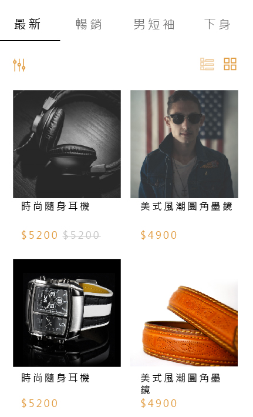
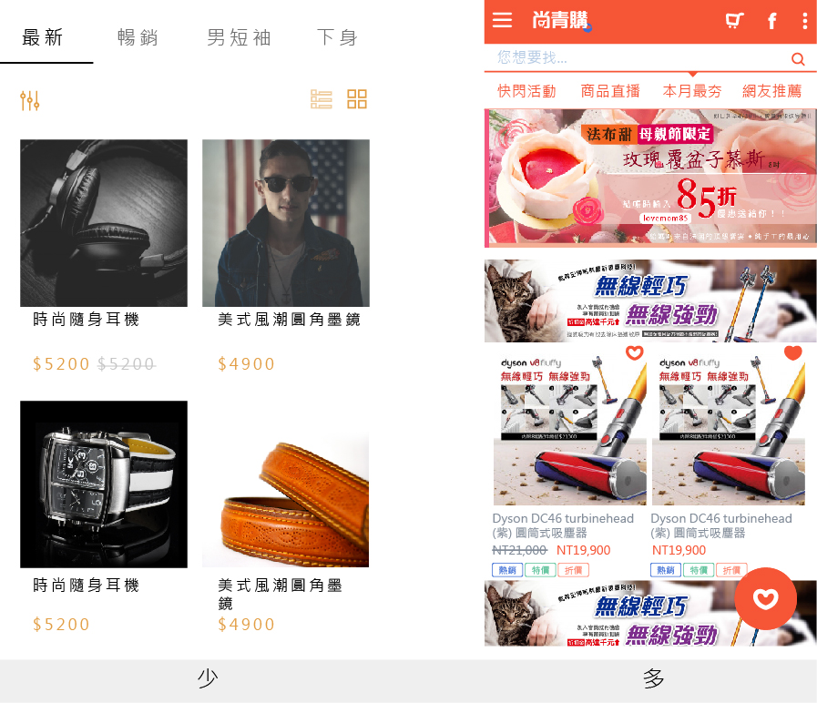
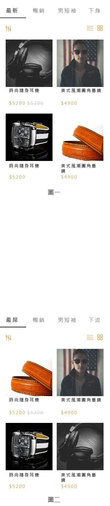
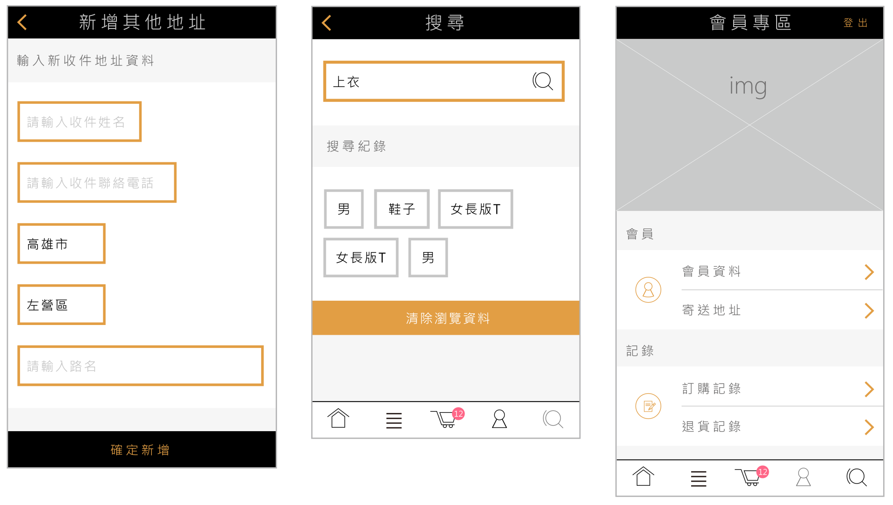
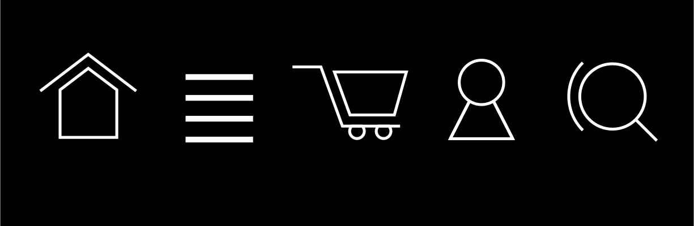

線上開店UI
Business

關於Business
這是一個為了線上開店平台所開發的版型,平台的主要客戶90%以上是零售業,事實上一開始公司是以"線上開店系統"為主要業務,營運一段時間之後接收到許多客戶反饋,做了一次大改版~~這支DEMO2就是改版後的內容~~
這支產品的APP-UI是以IOS為主,跟後來的"尚青購"的Android風格介面剛好形成強烈對比,可以對照著看喔!!

關於改版的重點
風格簡約但不強烈
面對的客戶非常多樣EX:服飾,食品,生活百貨..等,根據客戶的反饋, 當時的趨勢偏簡約風格, 但是為了讓各種業態的客戶都可以適應, 特地讓整體風格不要太強烈, 大部分客戶可以接受才是重點
盡量符合多數消費者使用
消費者的年齡層非常廣泛,跨越了至少兩個世代,太新穎或太老舊的設計方式都會造成不同年齡層的使用障礙
可以輕鬆應付各種客戶需求的UI
開發一個線上開店的APP,最難克服的點就是”客戶端的需求可能性非常非常多”要如何一次做到位,讓各式各樣的客戶可以輕鬆開店,並且在操作過程中感到舒適,方便,效率就是平台式產品的重點之一
關於目錄頁
關於目錄頁有一個有趣的統計數字,第一次進來的 user 停留在同一類別的目錄下超過2秒,有消費的比例只有0.017%簡單說,第一次進來逛逛的 user,到這邊兩秒內沒點進商品內容或看下一個目錄他就不會消費了
從設計面來看,我們在意的是"怎麼引起 user 的興趣來產生點擊的行為",嘗試把畫面變得精簡其實很有用,但前提是圖片的品質跟內容要夠強,否則反效果會更強
剛好跟尚青購形成對比
相較另一支產品"尚青購",對比很明顯喔!!!文字比例少很多~~("尚青購"的考量在這就不解釋了)
再來~~這個畫面裡只有"4個"與user互動的方式:
- 上方 swipe Bar
- 排序
- 顯示方式
- 進入商品內容
除了第一點,其他都是為了讓user方便瀏覽所設置的!!(降低文字的比例,只留必要功能) 再來關於商品的"方式"與"數量",畫面上永遠只會看到"4個"商品!!根據行為經濟學者的分析指出人類大腦的系統一最喜歡的選項大概是2~4個,換句話說,切換到這畫面開始的2秒以內,最吸引注意力的元素到第5個就很容易被忽略~~所以我們會盡量這頁調整成"只有4個商品圖片,除此之外越少越好~~"
另外~~再做一個測試~~請直接往下瀏覽~~
這樣瀏覽下來,您有發現嗎？？"皮帶的位置改變了~~"
那你有注意到從頭到尾皮帶的品名都是錯的嗎??(呵呵~~包括在其他圖片裡皮帶的品名都不是皮帶喔~~)
只有皮帶的圖片是白底,其他都是黑底,當這四個訊息(商品圖)裡面只有一個不一樣,大部分的大腦都會都會優先注意不同點~~而且人類對圖片的感受能力比文字高出許多,也就是說大腦比較容易注意到圖片高於文字,尤其圖片只有一個不一樣這是廣為人知的科學研究,但是應用到實務上就會變得很有趣吧~~也就是說,當你希望在某個點上抓住user的眼球,不仿試試這招吧~~刪除不必要的元素,使用圖片,同中求異~~也許會有意想不到的效果喔~~
(那你有發現slidebar的"最新"變成"最屌"嗎??還有"下身"變"下流"??)
關於配色
我的原則從來沒變過~~越少越好!!~~黑,白,灰為底,輔以卡其色,嫩紅色做搭配,其中需要輸入的input,button盡量以卡其為主,嫩紅則用在提示購物清單
左邊地址簿input都統一用卡其線框,提醒文字都放在框框裡,label都省略掉了,也是為了讓畫面簡潔一點,button有一個重點喔!!小螢幕全部都橫跨版面!!
右上的紅點點在有商品加入之後會一直閃爍,算是提醒的意味吧~~整個內容裡大概只有3個地方會出現這個顏色~~很少~~但就是因為很少~~所以比較容易讓user注意到喔!!當然是跟結帳有關的地方~~(少即是多阿~~~)

關於ICON
以IOS 10 UI為整體的UI定調,但是設計ICON的線條加粗,增加辨識度(~~天曉得會不會有北北反映字太細看不清楚~~)
設計上以線條及塊狀元素元素構成,由最基礎的幾何造型做變化,多直角配正圓,去掉圓角結構,形成較穩重的感覺(就是很硬拉!!)